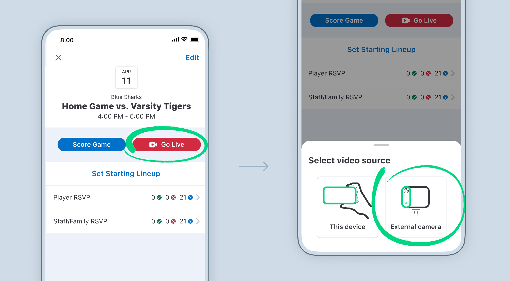

Quick Start Guide
Lakeridge Baseball
Live Streaming Setup
Live Streaming Setup
Follow all five steps in order every game day. Estimated setup time: 20–30 minutes.
Step 1 · Starlink Mini
Step 2 · Slate 7 Router
Step 3 · Mevo Start Cameras
Step 4 · Pre-game Check
Step 5 · GameChanger
1
Set up the Starlink Mini (Internet Access)
The source of internet for the entire system and stream — do this first
~8 min
Starlink Mini
Compact satellite dish — roughly the size of a laptop.

- Retrieve the Starlink Mini dish, its power cable, and the Ethernet cable from the bag.
- Assemble your preferred mount — use the tripod or table mount. Attach the dish to the mount.
- Connect the power cable to the Starlink dish, then plug the ethernet cable. The dish will start powering up immediately.
- Place the dish somewhere with a wide, clear view of the sky — well away from the press box roof, backstop netting, or any trees.
- Open the Starlink app on the iPad and tap "Alignment" to have the app guide you on direction and dish angle for best service.
- Wait for the status to read "Connected" — usually 5–10 minutes. Once connected, move to Step 2.
The Starlink Mini provides enough internet bandwidth for a clean 1080p stream. Once the app shows "Connected," you're good to go.
2
Set up the Slate 7 Router (Wi-Fi)
Creates the private Wi-Fi network used by all cameras and the iPad
~5 min
Slate 7 Router (GL-BE3600)
Portable travel router — roughly the size of a deck of cards.

- Take the Ethernet cable coming out of the Starlink Mini and plug it into the WAN port on the Slate 7. This is the blue port in the middle of the Slate 7.
- Plug the router's power cable into your power source. The indicator lights will come on within a few seconds.
- Place the router in a completely open, unobstructed location — on top of a dugout roof, on a bench in the open, or on a table near home plate.
- Position it as centrally as possible between all three planned camera locations — the closer and more central it is, the stronger the Wi-Fi signal to each camera.
- Give it 60 seconds to fully boot. The lights will settle when it's ready.
Never put the router in a bag or behind a wall. Obstructing it kills the Wi-Fi signal and will cause dropped frames, choppy video, or cameras disconnecting mid-game.
Think of it like a walkie-talkie: the more open air between the router and cameras, the stronger the connection. Pick the most central, exposed spot you can find.
3
Set up the 3 Mevo Start cameras
Mount, power, and verify each camera in Mevo Studio
~15 min
Mevo Start ×3 + fence/magnetic mounts
1080p wireless streaming cameras — each physically labeled for its position.
⚡ Always plug cameras into USB-C power for more than 1 game. Mevo Start batteries last approximately 1+ game — but may not be enough for a 2+ full games. When the battery dies the camera will shut off immediately.
Setup order matters: Always start with Camera 1 (home plate), then Camera 2 (1st base side), then Camera 3 (3rd base side). The label on each camera and mount tells you where it goes.
Camera setup steps — repeat for each camera
- Unpack and assemble the mount for Camera 1 (Home Plate). Extend the mounting arm and tighten all knobs until firm. Position it at the backstop fence behind home plate. Higher is better — ideal is 10–12 feet off the ground for the clearest view over.
- Before placing it in the mount, power on Camera 1 by pressing and holding the power button until the LED comes on and blinks. There is also a audible beep
- Click the camera into the mount and secure it to the fence, roof or railing. Aim it roughly toward home plate facing the infield — you will fine-tune the angle next.
- Open Mevo Studio on the iPad. Within 30–60 seconds the camera will appear automatically with a live preview. No pairing or passwords are needed.
- Check the preview on the iPad. Adjust the camera angle by hand until home plate and the batter's box are clearly centered in the frame. Check the iPad after each adjustment.
- Repeat steps 1–5 for Camera 2 (1st base side): position along the 1st base fence, aim to capture 1st base, the infield, and as much of right field as possible.
- Repeat for Camera 3 (3rd base side): position along the 3rd base fence, aim to capture 3rd base, the infield, and as much of left field as possible.
- Once all 3 cameras appear in Mevo Studio and you are satisfied with all three views, camera setup is complete.


Camera not appearing in Mevo Studio? First confirm the iPad is connected to the Slate 7's Wi-Fi network — not your school Wi-Fi or phone hotspot. If it is, power the camera off, wait 15 seconds, power it back on, and wait 60 seconds.
4
Pre-game check and standby
Final checks before going live — don't skip this
Hold
- In Mevo Studio, review all 3 camera feeds one more time. Check angles, check that the action area is in frame, and make sure all cables are tidy and secure.
- Verify the iPad shows it is connected to the Slate 7's Wi-Fi network — not school Wi-Fi or a hotspot. Check in iPad Settings → Wi-Fi if you're unsure.
- Confirm the Starlink app still shows "Connected" and the router's indicator lights are still on.
- Check the iPad battery level. Plug it in if it's below 80% — you need it for the entire game.
- Keep the iPad in the Mevo Studio app during the game. Do not let leave the screen as it will kill the Live feed.
When to start the stream: Begin when the coaches walk out to meet the umpires at home plate — or about 60 seconds before that. This gives viewers a natural, broadcast-style opening to the game.
5
Go live via GameChanger
Start the stream at game time — follow the exact steps below
~2 min
Live stream
⚾
Today's game
Record video
1 · Open game in GameChanger,
tap "Record video"
tap "Record video"
›
Select camera
Built-in camera
External camera ✓
2 · Select
"External camera"
"External camera"
›
Camera source
Mevo Multicam ✓
Opens Mevo Studio
3 · Choose "Mevo Multicam"
— Mevo Studio opens
— Mevo Studio opens
›
▶
Go Live
Wait ~60 sec first
4 · Wait ~60 sec,
then tap "Go Live"
then tap "Go Live"
- Open the GameChanger app on the iPad and tap today's game.
- Tap the Record Video button (camera icon).
- When prompted, select "External Camera."
- Choose "Mevo Multicam." GameChanger will prompt you through a brief setup screen and then automatically open Mevo Studio.
- Wait about 60 seconds inside Mevo Studio. Check that settings are 1080p @ 6Mbps. The "Go Live" button will highlight and become tappable when it's ready.
- Tap "Go Live." You're streaming.

Do not leave the Mevo Studio app while streaming. Switching to another app, pressing the Home button, or letting the iPad screen lock will immediately cut the live stream for all viewers. Keep the screen on and stay in Mevo Studio for the entire game.
"Go Live" button stays grayed out after 90 seconds? Return to Mevo Studio and confirm all 3 cameras are showing and active. Then go back to GameChanger and restart from Step 2 (Record Video → External Camera → Mevo Multicam).
🎒 After the game — pack down
Reverse the setup in order. Do a full walkthrough before you leave the field.
- In Mevo Studio, tap Live button to stop the stream. If you were recording locally to the iPad, also tap the Rec button to stop that recording.
- Unplug any attached USB-C power cables from each camera before removing them from the mounts.
- Power off each camera by holding the power button until the LED goes dark. Remove cameras from mounts carefully.
- Disassemble each mount — collapse all legs and arms, coil straps, and bundle all parts together.
- Unplug the Slate 7 router. Coil the power and Ethernet cables neatly and pack the router away.
- Unplug the Starlink Mini. Disconnect both cables, and pack it carefully into its carry case.
- Walk the full perimeter — check the backstop area, both dugouts, and wherever the power strip was located. Collect any cables, mounts, or gear left behind.
Troubleshooting — what to do when something goes wrong
Camera not showing in Mevo Studio
Confirm iPad is on the Slate 7's Wi-Fi (not school network or hotspot). Power the camera off, wait 15 sec, power back on. Wait 60 sec.
Starlink won't connect
Move the dish to a more open area — away from roof overhangs, netting, or trees. Wait 3 full minutes before assuming it won't work.
"Go Live" button stays grayed out
Return to Mevo Studio. Confirm all 3 cameras are live and showing. Go back to GameChanger → Record Video → External Camera → Mevo Multicam.
Stream is choppy or dropping
Check the router is still in the open and powered on. Check Starlink still shows "Connected." Try moving the router closer to the cameras.
Camera shut off mid-game
The USB-C power cable came unplugged. Re-connect it — the camera will restart and should re-appear in Mevo Studio within 60 seconds.
Stream cut out mid-game
The iPad likely left Mevo Studio. Return to the app, then restart the stream: GameChanger → Record Video → External Camera → Mevo Multicam → Go Live.